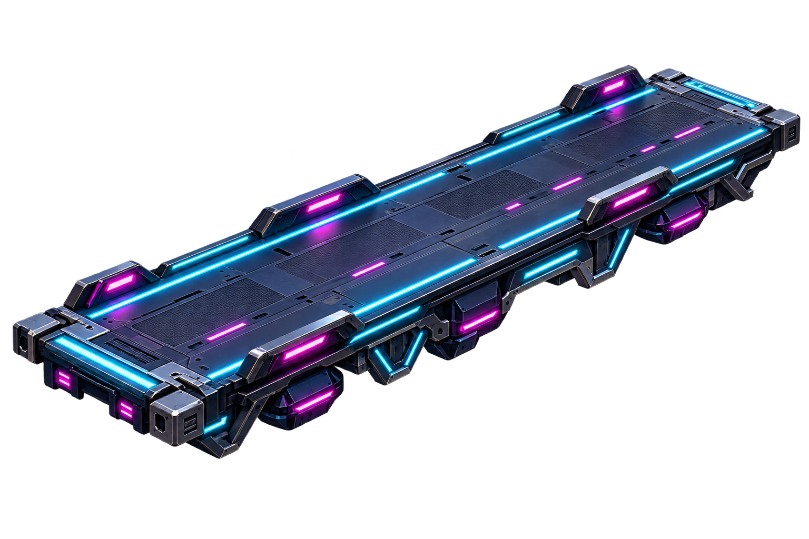

Straight aerial deck
18 × 24 × 2 m
modeling reference

Construction details
Blender: build a dimensioned repeatable mesh or sweep a cross-section along the route.
Origin: Center of the upper driving deck, Z=0; travel along local -Y.
Collision: Simple deck slab; keep bolts and decorative underbody non-colliding.
LOD triangle targets: 2,400 / 900 / 240